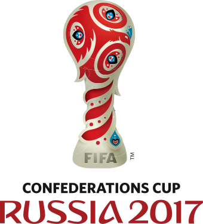

As with most things in football, the first International match took place in England. On the 5th of March 1870 England hosted Scotland at the cricket ground The Oval. It was the first of five matches between the two teams from 1870 until 1872. That initial game isn’t recognised by FIFA as being an official international match as some of the Scottish players were actually based in London. The first official international game took place in Glasgow on the 30th of November 1872, a 0-0 draw watched by around 4000 people.
Informal international matches between nations were held sporadically from then on, depending on the availability of the various teams to play games. It wasn’t until 1904 that The Fédération Internationale de Football Association was formed. FIFA, to give it its acronym, was originally devised to oversee matches played between the associations of Belgium, Denmark, France, Germany, the Netherlands, Spain, Sweden, and Switzerland.
FIFA expanded over the years, with England joining the organisation in 1905, South Africa in 1909, Argentina in 1912, Chile and Canada in 1913 and the United States of America in 1914. The first tournament that FIFA was responsible for was the football side of the 1908 London Olympic Games. The first FIFA World Cup, the organisation’s flagship tournament, was held in 1930 in Montevideo, Uruguay.
There are three International Competitions you can choose from please choose and click the desired Competition you want to know
The FIFA World Cup, often simply called the World Cup, is an international association football competition contested by the senior men's national teams of the members of the Fédération Internationale de Football Association (FIFA), the sport's global governing body. The championship has been awarded every four years since the inaugural tournament in 1930, except in 1942 and 1946 when it was not held because of the Second World War. The current champion is France, which won its second title at the 2018 tournament in Russia.
The current format involves a qualification phase, which takes place over the preceding three years, to determine which teams qualify for the tournament phase. In the tournament phase, 32 teams, including the automatically qualifying host nation(s), compete for the title at venues within the host nation(s) over about a month.
The 21 World Cup tournaments have been won by eight national teams. Brazil have won five times, and they are the only team to have played in every tournament. The other World Cup winners are Germany and Italy, with four titles each; Argentina, France, and inaugural winner Uruguay, with two titles each; and England and Spain, with one title each.
The World Cup is the most prestigious association football tournament in the world, as well as the most widely viewed and followed sporting event in the world, exceeding even the Olympic Games. The cumulative viewership of all matches of the 2006 World Cup was estimated to be 26.29 billion with an estimated 715.1 million people watching the final match, a ninth of the entire population of the planet.
Pervious Winners
Hosts
Winner
Score
2018 Russia
France
France 4-2 Croatia
2014 Brazil
Germany
Germany 1-0 Argentina
2010 South Africa
Spain
Spain 1-0 Netherlands
2006 Germany
Italy
1-1, then Italy beat France 5-3 in penalties
2002 Japan / S. Korea
Brazil
Brazil 2-0 Germany
1998 France
France
France 3-0 Brazil
1994 USA
Brazil
0-0, then Brazil defeated Italy 3-2 in penalties
1990 Italy
Germany
Germany 1-0 Argentina
1986 Mexico
Argentina
Argentina 3-2 Germany
1982 Spain
Italy
Italy 3-1 Germany
1978 Argentina
Argentina
Argentina 3-1 Holland
1974 Germany
Germany
Germany 2-1 Holland
1970 Mexico
Brazil
Brazil 4-1 Italy
Most Important Matches
You can change the video by clicking
To close this window please click

The FIFA Confederations Cup was an international association football tournament for men's national teams, held every four years by FIFA. It was contested by the holders of each of the six (AFC, CAF, CONCACAF, CONMEBOL, OFC and UEFA) continental championships, along with the current FIFA World Cup holder and the host nation, to bring the number of teams up to eight.
Between 2001 and 2017 (with an exception of 2003), the tournament was held in the country that would host the World Cup next year, acting as a test event for the larger tournament.
The last champions were Germany, who won the 2017 FIFA Confederations Cup by defeating Chile 1–0 in the final to win their first and only title.
In March 2019, FIFA confirmed that the tournament would no longer be active, owing to an expansion of the FIFA Club World Cup in 2021.
The tournament was originally organized by and held in Saudi Arabia, contested in 1992 and 1995 by the Saudi national side and some continental champions. Disputed as the King Fahd Cup (Confederations Winners Cup or Intercontinental Championship), in honor of the then Saudi ruler who organized the tournament with his country's federation, (thus in the form of an unofficial tournament. In 1997, FIFA took over the organization of the tournament, named it the FIFA Confederations Cup and staged the competition every two years and recognized the first two editions in 1997.
After 2005, it was held every four years, in the year prior to each World Cup in the host country of the forthcoming World Cup (the 2001 edition was hosted in South Korea and Japan, before the quadrennial pattern was established). Considered a dress-rehearsal for the World Cup it precedes, it used around half of the stadiums intended for use at the following year's competition and gave the host nation, which qualified for that tournament automatically, experience at a high level of competition during two years of otherwise friendlies. At the same time, participation was made optional for the South American and European champions.
Pervious Winners
Hosts
Winner
Score
2017 Russia
Germany
Germany 1-0 Chile
2013 Brazil
Brazil
Brazil 1-0 Spain
2009 South Africa
Brazil
Brazil 3-2 USA
2005 Germany
Brazil
Brazil 4-1 Argentina
2003 France
France
France 1-0 Cameroon
2001 Japan
France
France 1-0 Japan
1999 Mexico
Mexico
Mexico 4-3 Brazil
1997 Saudi Arabia
Brazil
Brazil 6-0 Australia
Most Important Goals
You can change the video by clicking
To close this window please click
The CAF Africa Cup of Nations, officially CAN (French: Coupe d'Afrique des Nations), also referred to as AFCON, or Total Africa Cup of Nations after its headline sponsor, is the main international men’s association football competition in Africa. It is sanctioned by the Confederation of African Football (CAF) and was first held in 1957. Since 1968, it has been held every two years. The title holders at the time of a FIFA Confederations Cup qualify for that competition.
In 1957 there were only three participating nations: Egypt, Sudan and Ethiopia. South Africa was originally scheduled to compete, but were disqualified due to the apartheid policies of the government then in power. Since then, the tournament has grown greatly, making it necessary to hold a qualifying tournament. The number of participants in the final tournament reached 16 in 1998 and and until 2017, the format had been unchanged, with the sixteen teams being drawn into four groups of four teams each, with the top two teams of each group advancing to a "knock-out" stage. On 20 July 2017, the Africa Cup of Nations was moved from January to June and expanded from 16 to 24 teams
Egypt is the most successful nation in the cup's history, winning the tournament a record of seven times (including when Egypt was known as the United Arab Republic between 1958 and 1961). Three different trophies have been awarded during the tournament's history, with Ghana and Cameroon winning the first two versions to keep after each of them won a tournament three times. The current trophy was first awarded in 2002 and with Egypt winning it indefinitely after winning their unprecedented third consecutive title in 2010.
As of 2013, the tournament was switched to being held in odd-numbered years so as not to clash with the FIFA World Cup.

 As with most things in football, the first International match took place in England. On the 5th of March 1870 England hosted Scotland at the cricket ground The Oval. It was the first of five matches between the two teams from 1870 until 1872. That initial game isn’t recognised by FIFA as being an official international match as some of the Scottish players were actually based in London. The first official international game took place in Glasgow on the 30th of November 1872, a 0-0 draw watched by around 4000 people.
As with most things in football, the first International match took place in England. On the 5th of March 1870 England hosted Scotland at the cricket ground The Oval. It was the first of five matches between the two teams from 1870 until 1872. That initial game isn’t recognised by FIFA as being an official international match as some of the Scottish players were actually based in London. The first official international game took place in Glasgow on the 30th of November 1872, a 0-0 draw watched by around 4000 people. The FIFA World Cup, often simply called the World Cup, is an international association football competition contested by the senior men's national teams of the members of the Fédération Internationale de Football Association (FIFA), the sport's global governing body. The championship has been awarded every four years since the inaugural tournament in 1930, except in 1942 and 1946 when it was not held because of the Second World War. The current champion is France, which won its second title at the 2018 tournament in Russia.
The FIFA World Cup, often simply called the World Cup, is an international association football competition contested by the senior men's national teams of the members of the Fédération Internationale de Football Association (FIFA), the sport's global governing body. The championship has been awarded every four years since the inaugural tournament in 1930, except in 1942 and 1946 when it was not held because of the Second World War. The current champion is France, which won its second title at the 2018 tournament in Russia. The CAF Africa Cup of Nations, officially CAN (French: Coupe d'Afrique des Nations), also referred to as AFCON, or Total Africa Cup of Nations after its headline sponsor, is the main international men’s association football competition in Africa. It is sanctioned by the Confederation of African Football (CAF) and was first held in 1957. Since 1968, it has been held every two years. The title holders at the time of a FIFA Confederations Cup qualify for that competition.
The CAF Africa Cup of Nations, officially CAN (French: Coupe d'Afrique des Nations), also referred to as AFCON, or Total Africa Cup of Nations after its headline sponsor, is the main international men’s association football competition in Africa. It is sanctioned by the Confederation of African Football (CAF) and was first held in 1957. Since 1968, it has been held every two years. The title holders at the time of a FIFA Confederations Cup qualify for that competition.